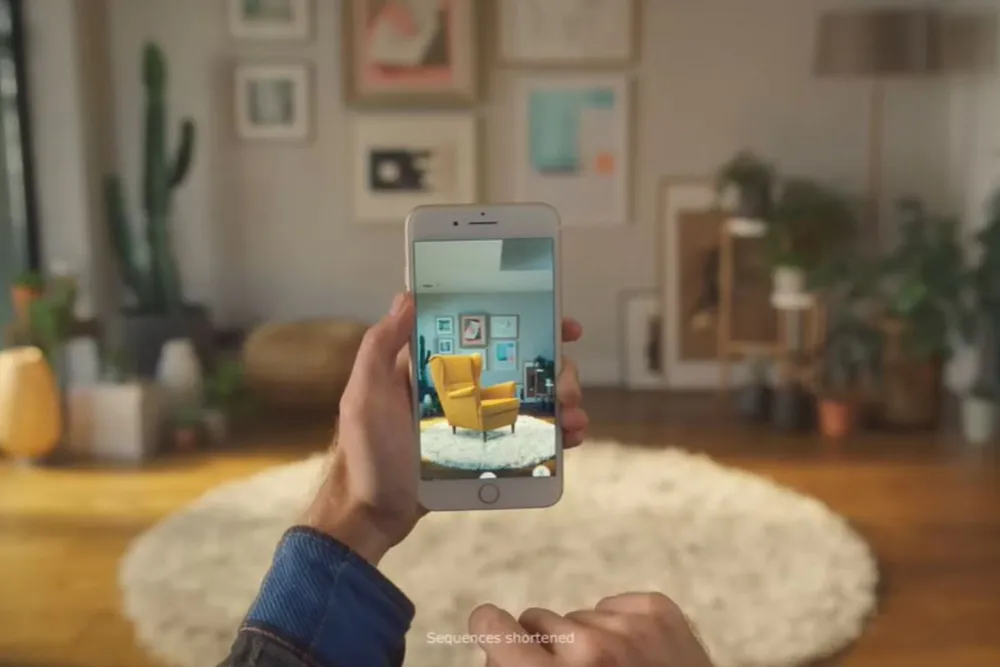
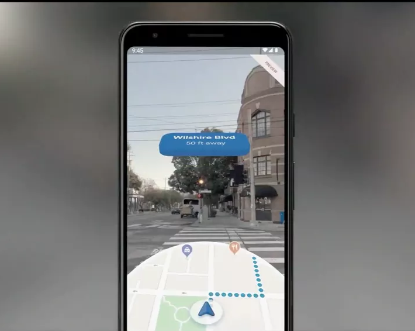
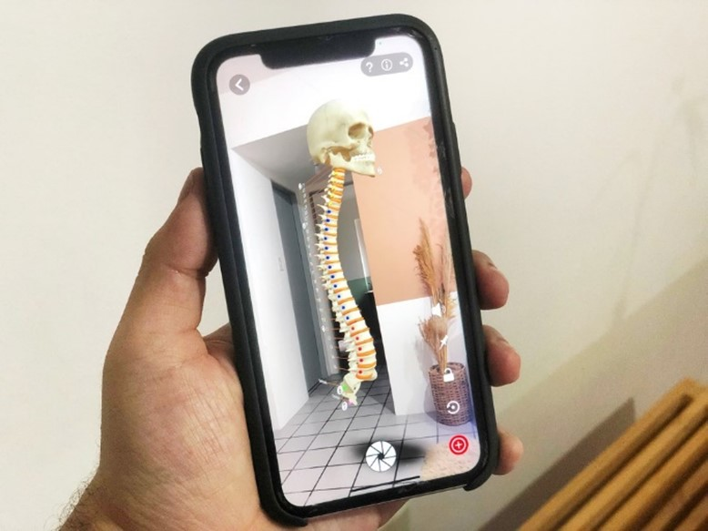
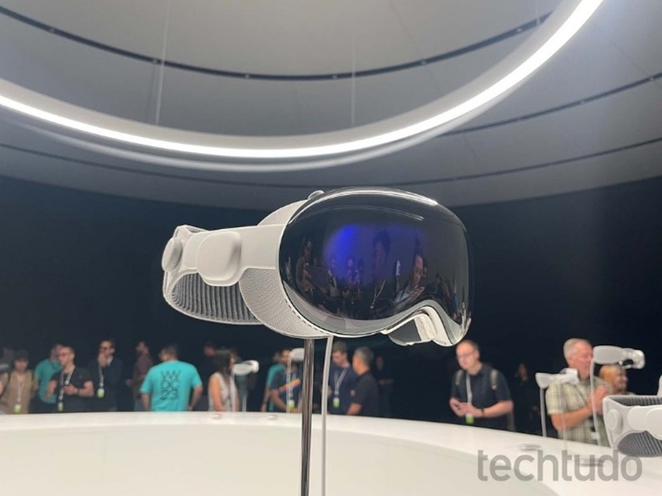

A realidade aumentada é uma tecnologia que consegue expandir o que é visto pelos olhos humanos em ambientes virtuais. Com o auxílio de dispositivos eletrônicos, como celulares, tablets ou óculos específicos para RA, a ferramenta consegue sobrepor elementos digitais a lugares reais, possibilitando que os usuários interajam com ambos os “mundos” - isto é, o físico e o virtual - ao mesmo tempo.
Um dos aplicativos que mais ajudou a difundir a RA é o Pokémon Go, que permite aos usuários encontrar e capturar Pokémons no mundo real. Outro exemplo bastante comum de realidade aumentada são os filtros disponíveis nas redes sociais, que inserem elementos virtuais no rosto do usuário, como orelhas de gatinho ou uma maquiagem glamourosa.
No entanto, o uso dessa tecnologia é muito mais amplo do que apenas jogos e filtros. Além de auxiliar em tarefas básicas do cotidiano, como comprar uma roupa ou um móvel, a RA também pode representar um avanço importante em setores fundamentais, como saúde e educação.
A realidade aumentada usa diversos elementos para conseguir mesclar o mundo real com o virtual. Em geral, a câmera do dispositivo captura informações sobre o ambiente em que o usuário se encontra. Depois, esses dados são processados por um programa, que determina a localização do elemento 3D e faz com que ele apareça na tela em tempo real.
Existem dois tipos de RA: o primeiro precisa de marcadores para funcionar, que podem ser uma foto ou um QR Code, por exemplo. Ao reconhecer esse ponto de referência, o programa de realidade aumentada consegue definir o local exato para inserir o objeto virtual.
Já o segundo tipo é mais avançado e não precisa de marcadores. Usando uma câmera, a ferramenta de realidade aumentada utiliza um algoritmo de reconhecimento para detectar padrões, cores e demais características do ambiente. Em seguida, esses dados são processados e, com ajuda de outros dispositivos, - como GPS, acelerômetro e giroscópio, - consegue sobrepor a imagem digital no mundo real.
Como já mencionado, o uso da realidade aumentada vai muito além dos jogos ou filtros nas redes sociais. O aplicativo Google Maps, por exemplo, possui a função “Live View”, que utiliza realidade aumentada para guiar os usuários em rotas traçadas. O aplicativo também destaca pontos de interesse ao redor, indicando placas importantes e inserindo informações sobre estabelecimentos comerciais.
Um setor que tem aproveitado bastante os benefícios da RA é o de decoração. No Brasil, a Suvinil lançou um aplicativo que usa a tecnologia para possibilitar que o cliente teste diferentes cores de pintura em uma parede. No exterior, o app da loja Ikea permite que os usuários visualizem como um móvel ficaria no ambiente, preservando as proporções e diminuindo as chances de erro na compra.
Outro uso bastante comum da realidade aumentada é em museus e pontos turísticos. Na maioria das vezes, basta escanear o QR Code ou acessar um aplicativo específico para acessar informações adicionais sobre o local ou a obra de arte.
Aplicativo da Ikea permite visualizar como um móvel ficaria no ambiente — Foto: Foto: Divulgação/Ikea
A principal diferença entre a realidade aumentada e a realidade virtual (RV) é que a primeira incorpora elementos digitais em ambientes verdadeiros, enquanto a segunda desconecta a pessoa do mundo real e a transporta para um cenário virtual. A realidade virtual também costuma estimular outros sentidos, como a audição, promovendo uma experiência ainda mais imersiva.
Outra diferença entre as tecnologias são os dispositivos necessários para acessá-las. Como dito anteriormente, a RA pode ser usada através de aparelhos do cotidiano, como smartphones ou tablets. A realidade virtual, no entanto, precisa de óculos e headsets específicos, que servem justamente para isolar ainda mais os usuários no mundo virtual.
A realidade aumentada pode trazer muita praticidade para o dia a dia dos usuários. Além dos exemplos já citados, como navegação, turismo e decoração, a tecnologia também pode ser usada em outras áreas, como na moda. Com a RA, é possível experimentar roupas e sapatos de forma virtual antes de realizar uma compra online, por exemplo.
]Outro setor que pode se beneficiar bastante é o de arquitetura, já que a ferramenta permite a criação de projetos inteiros, facilitando a visualização do resultado de uma construção ou reforma antes mesmo de começar. Além disso, também é possível tirar medidas exatas com um aplicativo no celular, sem que o usuário precise recorrer a trenas ou outros equipamentos.
A realidade aumentada pode ajudar até mesmo na área da saúde, permitindo que o médico tenha um acesso mais rápido ao histórico do paciente. Isso é útil, por exemplo, em treinamentos e estudos anatômicos, já que os profissionais podem, também, treinar cirurgias e outros procedimentos usando a tecnologia.
Realidade aumentada do Live View do Google Maps — Foto: Foto: Divulgação/Google
A realidade aumentada é uma ferramenta interessante de ser usada na sala de aula, principalmente por atrair bastante a atenção de alunos mais novos. Alguns livros didáticos já estão sendo lançados com marcadores de RA, possibilitando que os estudantes interajam com o conteúdo de forma cativante, mantendo-os mais engajados e estimulando a criatividade.
Existem também diversos apps educativos que utilizam a realidade aumentada para expandir os horizontes dos alunos, levando-os a lugares que talvez nunca teriam chance de visitar. Um exemplo é o Google Arts & Culture, que permite que o usuário passeie por pontos turísticos ao redor do mundo, visite museus virtualmente e conheça mais sobre as obras de arte.
Existem vários aplicativos disponíveis para Android e iPhone (iOS) que usam realidade aumentada. O Arloopa, por exemplo, oferece diversas opções de imagens que podem ser sobrepostas ao ambiente, além de possuir uma categoria inteira dedicada à educação, mostrando planetas, partes do corpo, elementos químicos e outros.
Outro aplicativo que pode contribuir com o ensino é o Microsoft Math Solver, que ajuda a resolver equações matemáticas de forma descomplicada, explicando o passo a passo de como o cálculo foi feito.
O app Missão Marte RA permite que o usuário explore a superfície do planeta em uma projeção 3D, caminhe pela superfície de Marte, dirija um Hoover da NASA e outras surpresas. Outra ferramenta que leva o usuário para o espaço é o Skeye. Focado em astronomia, o aplicativo funciona como um planetário na palma da mão.
Aplicativo Arloopa permite ver objetos em 3D no ambiente por meio de realidade aumentada no celular — Foto: Reprodução/Rodrigo Fernandes
O site 8th Wall (https://www.8thwall.com/) conta com inúmeras opções de jogos e filtros que utilizam realidade aumentada, como o Snap-a-dot, PizzaHut Pac-Man e Run with Pogba. Além de proporcionar experiências interativas, levando o usuário para locais como a Broadway e o parque Yosemite, nos Estados Unidos.
O Houzz (https://www.houzz.com/) é um site americano dedicado à arquitetura e decoração que permite que os usuários busquem inspirações por cômodo, estilo ou localização. Também é possível clicar em detalhes de uma imagem para saber mais sobre o objeto e buscar por itens semelhantes.
Já a Roar AR (https://theroar.io/) é uma plataforma online que permite criar objetos em realidade aumentada. A ferramenta é ideal para quem deseja implementar a tecnologia em sua área de atuação, como na criação de conteúdos educativos, em uma campanha de marketing, em websites de empresas ou apenas deseje criar artes em RA.
Existem algumas opções de óculos de realidade aumentada disponíveis no mercado. Em 2023, a Apple anunciou o Vision Pro, que terá um display 4K com tecnologia micro-OLED, controle de voz e conexão com a Siri. Além disso, ele utilizará sensores que detectam os movimentos dos olhos e das mãos, permitindo que a interação com o conteúdo seja mais natural, mas por enquanto não há previsão de lançamento no Brasil.
O principal concorrente do Vision Pro é o Quest Pro, lançado pela Meta. O dispositivo possui dois painéis LCD de alta definição e conta com um sistema operacional baseado no Android. O óculos também é capaz perceber movimentos oculares e expressões faciais, que são usados para dar mais emoção aos avatares no metaverso.
Para rivalizar com essas grandes marcas, a Xiaomi também anunciou o lançamento de um óculos de RA. O Wireless AR Glass Discovery Edition possui lentes micro-LED e uma camada de vidro eletrocrômico, que ajuda no ajuste do brilho de acordo com a preferência do usuário. Assim como os concorrentes, o óculos da Xioami também consegue captar o movimento das mãos e executar tarefas de acordo com os gestos realizados.
Vision Pro é o óculos de realidade aumentada da Apple — Foto: Foto: Diego Mattos/TechTudo
O uso de realidade aumentada em jogos vai muito além do já citado Pokémon Go. Um dos mais aclamados é o Ingress Prime, no qual os usuários são agentes que precisam procurar por portais no mundo real usando realidade aumentada. O objetivo é trabalhar em equipe para dominar territórios e criar campos de controle.
Já o Draconius GO permite que o usuário capture dragões para usá-los em batalhas.Tanto os gráficos quanto a jogabilidade são muito similares ao Pokémon Go, utilizando a localização do usuário e permitindo que os personagens sejam encontrados em ambientes verdadeiros.
Ainda nessa linha tem o Jurassic World Com Vida, que transforma o mundo real em um verdadeiro parque dos dinossauros. Os jogadores precisam encontrar diferentes espécies de dinossauros e capturá-los. Depois, é possível criar raças híbridas em laboratório, além de realizar batalhas.
No Five Nights at Freddy's AR, o jogador precisa ficar atento aos robôs animados que estão com defeito para sobreviver. O objetivo é encontrar os animatrônicos que irão saltar das paredes tentando atacá-lo e será necessário utilizar uma arma de choque para mantê-los afastados.
© 2023 Gustavo Oliveira. All rights reserved.